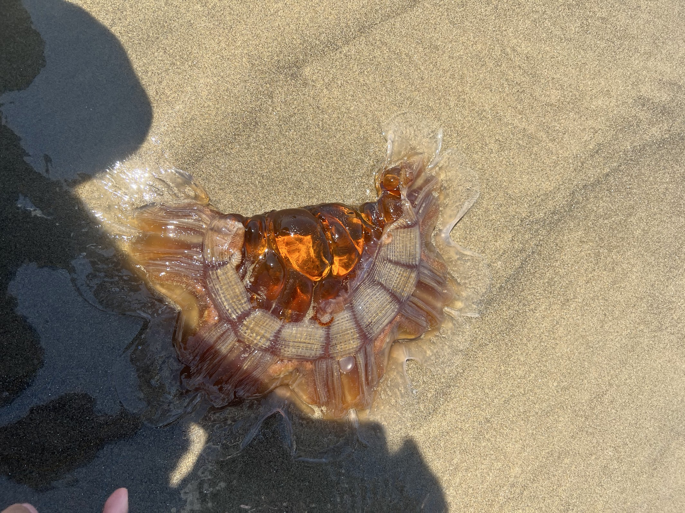

The Pacific Coast Highway Road Trip
Published on: August 23, 2024
WIP.
Table of Contents
Itinerary: Pacific Coast Highway Road Trip
Washington
We started here.
Oregon
And then we drove here.

During a stop at Cannon Beach, Oregon, we stumbled upon a large (and sadly deceased) lion's mane jellyfish washed up on the shore. We were scared it could still electrocute us but we still poked it. It had the texture of a giant, hard, solid piece of jello.